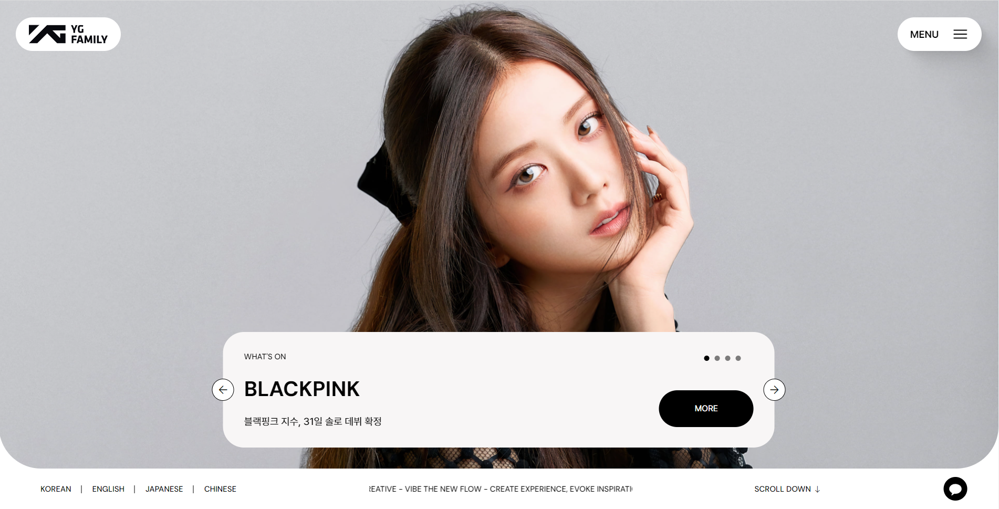
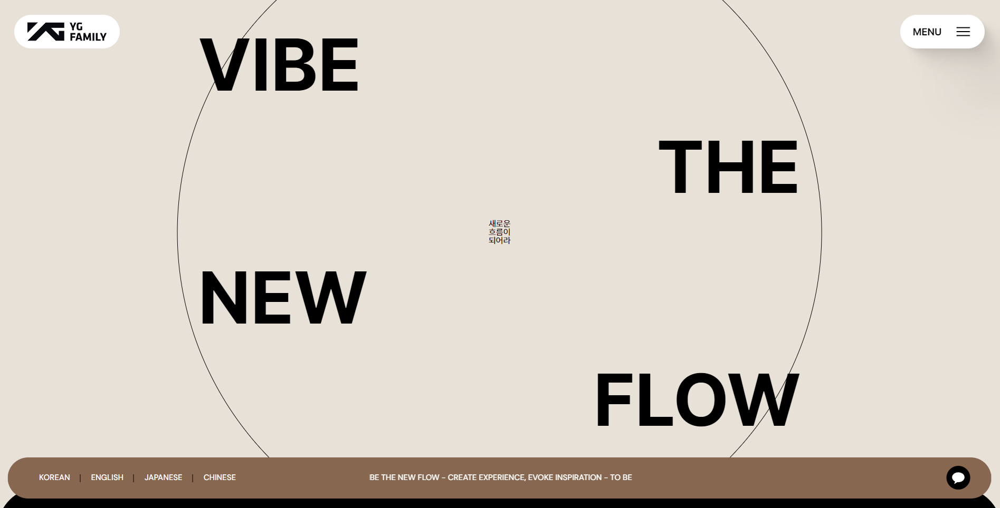
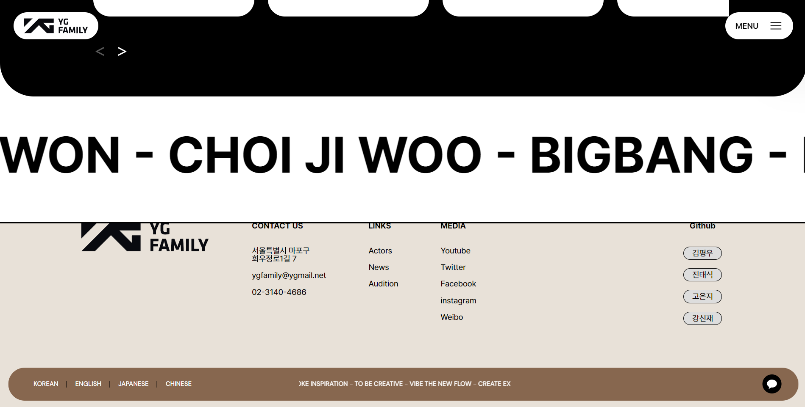

YG FAMILY
- 
- 
- 
Overview
목표
- YG 아이덴디티를 고려한 리디자인
- 팀 단위로 협업을 통해 완성시키는 사이트
- git organization 사용
- 다양한 자바스크립트 사용
Team
팀명
과제하느라 죽을뻔했조
팀장
고은지
팀원
김평우, 진태식, 강신재
Timeline
- 리디자인 사이트 선정
- 역할 분담
- 팀 프로젝트 git 생성
- UI 디자인 프로토타입 제작
- 퍼블리싱 가이드라인 제작
- 공용 스타일 css 제작
- 담당 페이지 퍼블리싱
- 페이지 연결 및 확인
My Work
- 공용 스타일 css 제작
- index 페이지 퍼블리싱
- 공용 변수 variable 파일 제작
- git 관리
Guideline
YG FAMILY 리디자인 퍼블리싱 가이드라인을 확인해볼수 있습니다. 퍼블리싱 가이드라인 바로가기
Project
잘한점
- 공용 스타일 css를 다른 팀원들의 페이지에서도 제대로 구현되게 제작함
- sticky를 이용하여 마지막에 페이지가 흐르는듯한 표현을 제대로 구현하였음
- swiper같은 플러그인을 제대로 활용해서 효과를 추가하였음
- 첫 페이지의 소개바 슬라이드 표현을 js로 제대로 구현시켰음 슬라이드 표현 기술서 보기
부족한점
- 첫 페이지의 소개바가 입체적으로 움직이게 구현하고 싶었지만 제대로 구현하지 못하여 단순히 위아래로 사라지게 표현함
- 로고를 누르면 부드럽게 첫화면으로 올라오게 하고 싶었지만 스크롤이 움직이는 중간에 로고를 클릭하면 한번 끊킨후에 스크립트가 작동함
- 텍스트가 흐르는 애니메이션 효과가 계속 자연스럽게 움직이는게 아니라 1분마다 끊키는듯한 느낌이 있음
- 폰트들이 튀어나오는 부분의 효과를 조금 더 화려하게 주고 싶었지만 너무 단순하게 표현해서 아쉬움
- 팀원들끼리 폰트 크기나 굵기가 제각각인 부분이 있었음
배운점
- slide 효과를 js코드로 구현할수 있게 되었음
- 공용 스타일 css를 어떻게 제작해야 팀 작업물에 제대로 적용할수 있을지 생각하게 되었음
- z-index와 포지션의 활용법을 더 자세히 알게 되었음
결과
- 팀 작업에 대한 이해도가 늘었음
- 자바스크립트를 이용하여 여러가지 효과를 추가하여 사용자의 관심을 이끌수 있게 하였음
- 사용자가 사용하기 편한 UI UX 디자인으로 리디자인 하였음
Review
git 관리자 라는 역할을 맡게 되어서 git organization 을 처음 사용해봤는데, git을 이용한 팀 작업에 대해서 더 지식이 늘었습니다.
팀에서 사용할 공용 스타일 css나 변수 등을 제작했는데 내 페이지에서는 작동되지만 다른 팀원들의 페이지에서는 작동되지 않는 경우를 수정하여 적용되게 하였습니다.
팀 작업 중에 각자 폰트나 여백 같은 부분이 처음에 정해진대로 되어있지 않은 경우가 있어서 팀 소통이 부족했다고 생각이 들어서 아쉬웠습니다.
여러가지 플러그인들을 사용해보면서 다른 플러그인들도 이용하여 사이트에 여러 효과를 간단하게 넣어볼수 있겠구나 생각했습니다.